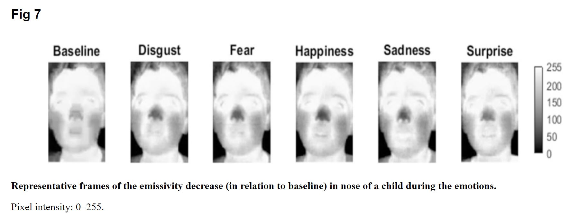

Knowledge Based techniques - use syntactic characteristics of languange to detect emotion
Statistical Methods - makes use of algorithms
Hybrid Methods - combination
In a study by Goulart, using Infrared Thermal Imaging (IRTI)to analyze five emotions (disgust, fear, happiness, sadness and surprise) from facial thermal images of typically developing (TD) children aged 7-11 years using emissivity variation, as recorded by IRTI.
Study contributeed to the dataset of 7-11-year-old TD children, an age range for which there is a gap in the literature.

Gouloart C et. al. Emotion analysis in children through facial emissivity of infrared thermal imaging.PLoS One. 2019; 14(3)